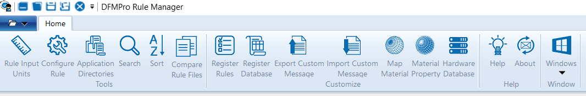

このダイアログボックスでは、ルールを編集する際に、入力する長さおよび角度の値の単位を設定できます。 |
|
変更を適用するための特定のルールファイル用ダイアログボックスを開きます。 |
|
アプリケーションディレクトリ |
デフォルトのデータベースを変更するために使用されます。 |
一覧から特定のルールを検索するために使用されます。 |
|
列をアルファベット順に並べ替え、上下矢印を使用して優先度を設定するために使用されます。 |
|
2つの異なるルールファイルを比較し、それらの違いを識別するために使用されます。 |
|
解析に使用するルールの種類をカスタマイズするために使用されます。 |
|
既存の登録済みデータベースモジュールを削除し、現在のものを読み込み、新しいものを読み込みます。 |
|
Help_ID、ルール名、ルールカテゴリ、カスタムメッセージ列などの詳細を含む Excel ファイルをエクスポートするために使用されます。 |
|
Help_ID、ルール名、ルールカテゴリ、カスタムメッセージ列などの詳細を含む Excel ファイルをインポートするために使用されます。 |
|
データベースの更新を支援する「材料から製造プロセスへのマッピング」ダイアログボックスを開くために使用されます。 |
|
材料密度や被削性などの材料特性を開くために使用されます。 |
|
締結部品データベースを変更、インポート、エクスポート、追加、削除できるハードウェアデータベースダイアログボックスを開くために使用されます。 |
|
ヘルプ |
コンテキストに基づいたヘルプファイルを表示するために使用されます。 |
バージョン情報 |
バージョンやビルド日など、ルールマネージャーに関する情報を表示します。 |
ウィンドウ |
利用可能な一覧から必要なルールファイルウィンドウを選択します。 |